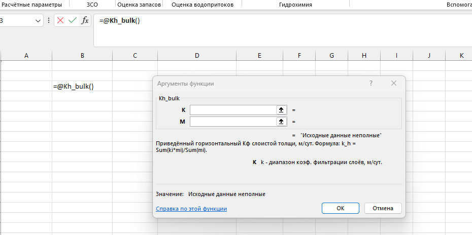

| Функция | Что вычисляет |
|---|---|
| Водопроводимость T | Основной фильтрационный параметр водоносного пласта |
| Уровнепроводность a | Скорость распространения возмущения уровня в безнапорном пласте |
| Пьезопроводность a* | Скорость распространения возмущения давления в напорном пласте |
| Коэффициент упругой водоотдачи μ* | Ёмкостный параметр напорного пласта |
| Параметр перетекания B | Характеристика перетекания через разделяющий слой (однопластовая схема) |
| Параметр перетекания B (два пласта) | Та же характеристика для схемы с двумя взаимодействующими пластами |
| Средний Кф анизотропного пласта | Осреднённый коэффициент фильтрации с учётом анизотропии |
| Приведённый Кф слоистой толщи (гор.) | Эквивалентный коэффициент фильтрации по горизонтали для слоистой толщи |
| Приведённый Кф слоистой толщи (верт.) | Эквивалентный коэффициент фильтрации по вертикали для слоистой толщи |
| Плотность | Плотность породы/флюида по исходным данным |

Выбор пункта меню вставляет функцию в ячейку и сразу открывает диалог аргументов — с формулой и подсказками, если введённые данные не проходят проверку. Инженеру не нужно помнить синтаксис или искать документацию: он последовательно заполняет понятные поля.
Функции расчёта радиуса «большого колодца», условий корректности схематизации и координат центра тяжести системы скважин.
24 и 23 типовые гидродинамические схемы для подземных вод и притоков в горные выработки.